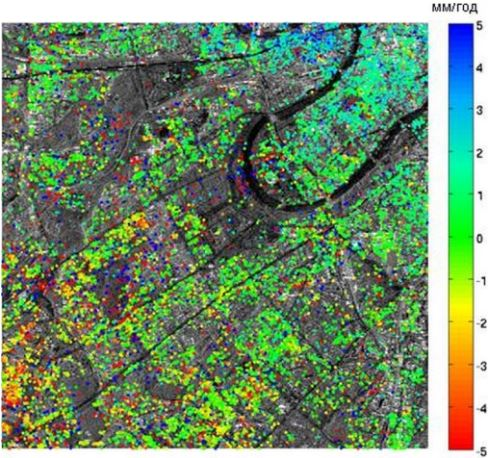

Радиолокационная интерферометрия – многоступенчатый метод обработки комплексных
радиолокационных данных, предполагающий использование набора (двух и более) радиолокационных изображений
исследуемой территории, полученных при близких условиях наблюдения,
определяемых интерферометрической базой.
Анализ когерентных сигналов, приходящих к радиолокаторам, разнесенным
в пространстве на интерферометрическую базу, позволяет рассчитать разность
фаз для каждого пиксела изображения, которая затем пересчитывается в значения высот или смещений
поверхности.
С использованием метода радиолокационной интерферометрии
была получена цифровая модель рельефа (ЦМР)
SRTM (Shuttle Radar Topography Mission), охватывающая сушу в диапазоне широт
60° с.ш. – 54° ю.ш. Исходная информация для её создания была получена в ходе 11-дневной съёмки с
борта космического шаттла Endeavour в феврале 2000 г. радиолокационными системами C-RADAR (длина волны 5,6
см) и X-RADAR (3,1 см) в режиме интерферометрии с «жёсткой» базой. В настоящее время ЦМР распространяется на
безвозмездной основе и имеет следующие характеристики: пространственное разрешение 30 м (для моделей,
полученных по данным обоих частотных диапазонов), относительная точность по высоте – не хуже 10 и 6 м для
моделей, составленных по данным C и X диапазонов соответственно, абсолютная – не хуже 16 м. Недостатками
ЦМР, созданной по данным X-диапазона, является неполное покрытие суши в пределах указанного выше диапазона
широт и большое количество шумов, особенно на поверхности водоёмов и водотоков. Проведённый разными
специалистами анализ ЦМР SRTM показал, что при равнинном и холмистом рельефе местности эта модель может
использоваться для построения горизонталей на топографических картах, начиная с масштабов 1:50 000 – 1:100
000.
Следующим шагом по созданию глобальной ЦМР методом радиолокационной интерферометрии стало
осуществление повторных тандемных съёмок группировкой космических аппаратов TerraSAR-X и TanDEM-X в период с
2010 по 2014 гг. В результате этой съёмки была сформирована ЦМР
WorldDEM, охватывающая
поверхность всей суши Земли и обладающая уникальными в своём роде точностными характеристиками:
пространственное разрешение – 12 м, абсолютная точность по высоте – 4 м, относительная – 2 м. В настоящее
время эта ЦМР распространяется только на коммерческой основе.

Сравнение ЦМР SRTM с разрешением 90 м и 30 м и WorldDEM с разрешением 12 м
Помимо построения ЦМР, радиолокационная интерферометрия используется для выявления и определения величин
смещений земной
поверхности и расположенных на ней объектов. Этот метод
называется
дифференциальной интерферометрией. Перечень исследуемых с опорой на этот метод
объектов достаточно широк, к ним относятся ледники, оползни, вулканы, участки местности в зонах
землетрясений, добычи полезных ископаемых, участки протаивания подземных льдов и др.

Результат обработки радиолокационных данных методом DinSAR:
слева - дифференциальная интерферограмма, справа - карта смещений
Разработанная в конце 1990-х гг. разновидность метода дифференциальной интерферометрии,
метод
постоянных рассеивателей PSInSAR (permanent/persistent scatterer interferometry), позволяет
достигать очень высокой (миллиметровой) точности измерения смещений. Этот метод использует в своей основе
устойчиво рассеивающие радиосигнал участки местности – специально сооружённые уголковые отражатели или же
подобные им объекты. Для обработки этим методом требуются большие временные серии данных, полученных в
интерферометрическом режиме съёмки. Так, разработчики программы SARscape рекомендуют использовать не менее
30 результатов таких съёмок. Этот метод часто используется для оценки стабильности зданий, трубопроводов,
выявления смещений поверхности в результате подземного строительства и т.д. Результаты обработки серий
радиолокационных данных методом постоянных рассеивателей, как правило, представляют собой набор точек, для
каждой из которых определены величины или скорости смещений за наблюдаемый период.
| 
|
Результат обработки радиолокационных данных на участок Москвы методом постоянных
рассеивателей (автор - А.Н. Назарян). Цветом показаны скорости смещения объектов
|
Подробнее с особенностями интерферометрической обработки радиолокационных данных можно ознакомиться в
электронной библиотеке "Вики-фотограмметрия" (раздел
"Теория радиолокационной космической съемки и обработки радиолокационных
снимков").